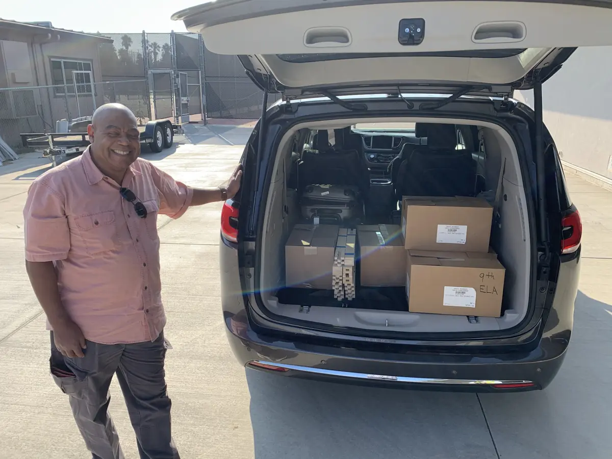

The initiative isn't one product. It's a set of practical access paths that can be combined or deployed individually depending on the field setting, available budget, and ministry context. Every path ends with the same goal: a local person who can use and pass on the resource without help.

What the initiative actually does
Each program area addresses a specific part of the access problem. They are designed to work together but can also function independently when time, budget, or field conditions require it.
- Phone-based distribution — moving resources from one device to another using AirDrop, Quick Share, LocalSend, USB, or microSD without mobile data
- VillageServer kit — a Raspberry Pi that broadcasts a private local Wi-Fi network so multiple phones can browse and download an offline library at once
- Power and media support — battery backup, solar panels, portable projectors, and Bluetooth speakers for group teaching sessions and film nights
- Satellite broadcast reception — optional receive-and-replay access to Free-to-Air Christian radio or video already broadcasting over a region
- Printed field guides — PDF handouts for every process, so the work continues after the visiting team has left
- Partner resources — coordinated content and ministry support through trusted affiliates including Digital Bible Society, TechSoup, and regional ministry partners
How a deployment comes together
- Assess the setting
Document the local language, device types, power reliability, internet access, and whether use will be individual or group-based. Every other decision flows from this.
- Pick the access path
Match the tool to the setting — phone transfer for simple one-to-one sharing, Raspberry Pi for group library access, projector for teaching sessions, satellite for truly remote deployments.
- Prepare the kit
Load content, label cables, charge batteries, test each component, and pack the matching printed guides before the team departs.
- Train the local user
Identify the person who will run the process after the visiting team leaves. Teach them, watch them do it independently, then confirm they can teach someone else.
- Support and improve
Collect feedback through partner reports and field updates. Use it to improve content, equipment choices, and training materials for the next deployment.
Every program is designed to leave something behind — not just a device, but a local person who knows how to use it and teach it forward.
Download the Programs and Services overview as a printable PDF for board meetings or partner introductions.
Download Programs PDF